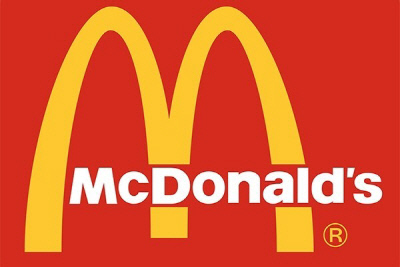

맥도날드 버거중 가장 인기있는 제품은 불고기버거이다.
맥도날드(영어: McDonald's)는 미국의 세계적인 패스트푸드 체인점이다. 전 세계 약39,000개 매장에서 하루에 약 6500만명의 고객이 찾고 있는 세계에서 가장 널리 알려진 체인 음식점이며, 햄버거 체인점으로는 가장 규모가 크다. 맥도날드는 주로 햄버거, 감자튀김, 콜라, 치킨류, 아침 메뉴, 패스트커피, 디저트류 등을 제공하고 있다. 최근의 웰빙 경향을 반영해 샐러드, 과일 등의 식물성, 건강한 음식들을 메뉴로 제공하고 있기도 하다.[2] 맥도날드를 세운 레이 크록의 천재성은 많은 사람들이 빠른 음식 서비스, 저렴한 가격, 맛있는 음식, 그리고 맛의 일관성을 원한다는 것을 알아차린 데에 있다. 맥도날드가 이러한 모습으로 나타나기 이전까지는 아무도 그러한 요소들을 제공하지 못했다. 전 세계 어디에서나 일관적인 매장 디자인과 계속 매장 수를 확장하여 더 많은 고객들에게 더 빠르게 제공할 수 있는 네트워크를 만들고, 햄버거의 맛을 똑같거나 유사하게, 매우 빠른 속도로, 편하고 접근하기 쉽게, 저렴하게, 맛있는 햄버거를 제공하고 있다. (패스트 푸드 사업에 대한 본질과 DNA다.)